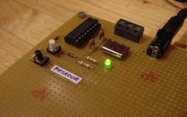

 | ||||||||||
|
Los microcontroladores PIC, basados en la arquitectura RISC, contemplan la mayoría de las características de esta arquitectura. Entre ellas podemos destacar, set de instrucciones homogeneo, reducido número de instrucciones y alta velocidad.
Por su reducido coste, su amplia gama y la cantidad de información disponible se han abierto un hueco bastante importante en el mercado de los microcontroladores, siendo Microchip una empresa lider junto Motorola o Intel. El objetivo de esta página no es juzgar que microcontrolador es el mejor, sino mostrar como empezar a trabajar con los microcontroladores PIC. Para ello utilizaremos el modelo básico PIC16F84A y diferentes herramientas de trabajo obtenidas gratuitamente de internet.
El PIC16F876A es de gama media, es decir no tiene todos los recursos internos que poseen otros modelos más avanzados, pero por otro lado su tamaño, precio y facilidad de uso, lo hacen idóneo para introducirse en el mundillo.
La empresa Microchip además de fabricar y distribuir los microcontroladores PIC ofrece un entorno de desarrollo semi-gratuito para ellos, se trata del MPLAB-IDE. Con esta aplicación podemos programar, compilar, simular y con una serie de herramientas extras incluso grabar. Esta claro que estas herramientas (PICMASTER, ICD, ICE,...) son las que no son gratuitas y las que impiden que se tenga el entorno completo de desarrollo. Pero esto no nos debe de preocupar, como en todo, la gente se ha buscado otros caminos para poder grabar PIC y se han desarrollado sus propios cargadores y grabadores.
Nuestra búsqeda nos ha proporcionado un entorno de desarrollo para Windows, aunque esperamos tener la lista de herramientas linux en breve, formado por:
Los microcontroladores PIC han supuesto una novedad para mí, si bien había oído hablar mucho de ellos, hasta ahora no había tenido necesidad de realizar ningún proyecto sobre ellos. Ahora, gracias a la asignatura de Arquitectura de Ordenadores, me veo en la necesidad de aprender su tecnología y empezar a realizar aplicaciones.
Siguiendo el método utilizado para diseñar la CT6811 (basada en el microcontrolador 68Hc11 de Motorola), hemos realizado una placa mínima que nos permita ir conociendo el hardware mínimo para tener un PIC funcionando y poder desarrollar una entrenadora. Para empezar hemos montado en una placa de puntos un PIC16F84 con un reloj externo, circuito de reset, un led y un pulsador. Para nosotros este es el esquema mínimo, aunque por las características de estos micros, nos podríamos incluso ahorrar el reloj. Hemos bautizado a este primer esquemático con el nombre de Picmin, que se puede obtener en la sección de downloads.
Los circuitos que aparecen en el esquema son independientes del PIC, por lo tanto si alguión quiere hacerse la placa con el PIC16F877 el circuito sigue siendo válido. La forma de desarrollar aplicaciones es utilizando las herramientas descritas en la sección del Entorno de Desarrollo. En los siguientes meses queremos desarrollar el circuito cargador desde el PC, de esa forma evitaremos el cargador externo.
Esta placa nos ha permitido desarrollar algunos programas de ejemplo que se encuentran en el apartado de download, lo que no encontraréis será el PCB de la placa porque no se ha realizado. Consideramos que es demasiado simple y que hasta que no se tenga el circuito grabador no conviene hacer su PCB. Os mantendremos informados de los avances
| Portal PIC | Portal de referencia para PIC en Linux | http://www.gnupic.org |
| GPUTILS | Herramientas de desarrollo | http://gputils.sourceforge.net |
| GPSIM | Simulador para PICS | http://www.dattalo.com/gnupic/gpsim.html |
| MPLAB-IDE | Entorno de desarrollo para PIC (editor, compilador y simulador) | MPLAB |
| Icprog | Programa cargador de los PIC y otros dispositivos como por ejemplo Eprom serie | Ic-prog |
| Manual.tgz | Manual que describe como usar el TE20 con el Icprog | Manual-TE20 |
| Manual 16F84 | Manual del PIC 16F84 utilizado en la placa PICMIN | 16f84 |
| Manual 16F87X | Manual del PIC 16F87X utilizado en la placa Picupsam | 16f87x |
| Serial Prog. | Manual que describe como grabar la EEPROM de un PIC16F84 mediante una linea serie | serial_prog.pdf |
| Microchip | Enlace a la pagina de Microchip donde tiene todos los manuales | Manuales |
| Nombre | Descripción | Versión | SCH | PCB | Componentes | |
| Picmin | Esquemático de la Placa Picmin | v1.0 | picmin.sch | picmin.pdf | No disponible | picmin.bom |
| Picupsam | Esquemático de la Placa Picupsam | v1.0 | picupsam.sch | picupsam.pdf | No disponible | picupsam.bom |
| Nombre | Descripción | Fichero ASM | Fichero HEX |
| Led_on | Programa que enciende un led a baja intensidad | led_on.asm | led_on.hex |
| Pulsador | Programa que enciende un led al pulsar un pulsador | pulsador.asm | pulsador.hex |
| Ledp | Programa que hace parpadear un LED | ledp.asm | ledp.hex |
| Ledpi | Programa que hace parpadear un LED con interrupciones | ledpi.asm | ledpi.hex |
| pled | Programa que hace parpadear un LED mientras no se apriete el pulsador | pled.asm | pled.hex |
| SKYRobot - Serie | Programa que controla un Robot por el puerto serie con las teclas O, P, Q | skyro1.asm | skyro1.hex |
| Microchip | Empresa que fabrica los Microcontroladores PIC y mantiene el entorno MPLAB-IDE | http://www.microchip.com |
| Icprog | Programa cargador de los PIC y otros dispositivos como por ejemplo Eprom serie | http://www.ic-prog.com |
| Microsystems engineering | Empresa que distribuye en España productos relacionados con el PIC | http://www.microcontroladores.com |
| Piclite | Compilador de C gratis para PIC 16F84. Plataforma Linux y Windows | http://www.htsoft.com/products/piclite/piclite.html |
| PIC docs | Apuntes del PIC para la asignatura Arquitectura de Computadoras Autor: profesor Alfonso Alejandre |
www.elalejandre.net Sg16F877.pdf |
| IEA ROBOTICS | Página de inicio | Dirección de contacto |